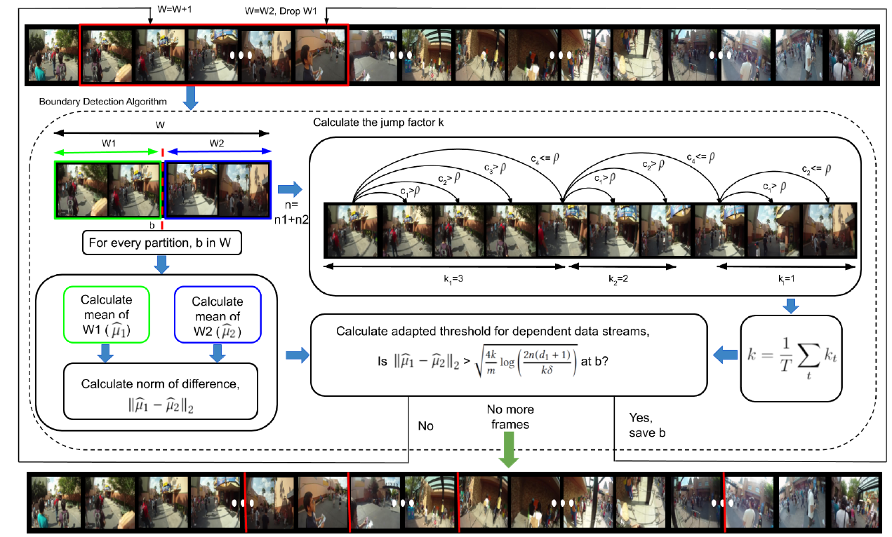
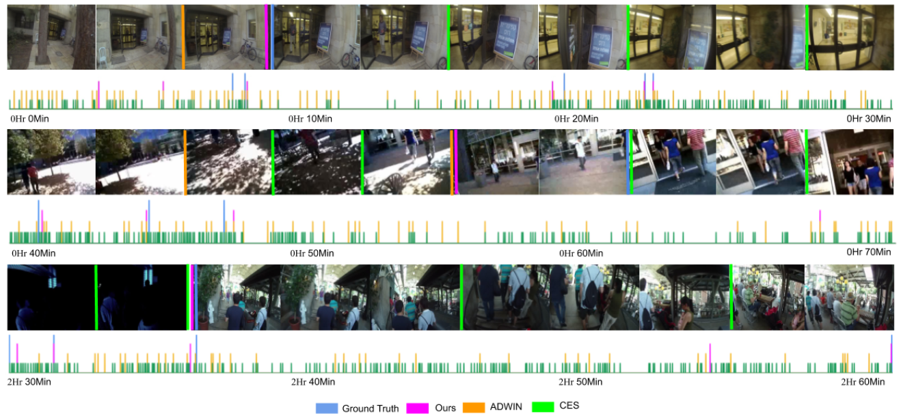

Abstract
The long and unconstrained nature of egocentric videos makes it imperative to use temporal segmentation as an important pre-processing step for many higher-level inference tasks. Activities of the wearer in an egocentric video typically span over hours and are often separated by slow, gradual changes. Furthermore, the change of camera viewpoint due to the wearer's head motion causes frequent and extreme, but, spurious scene changes. The continuous nature of boundaries makes it difficult to apply traditional Markov Random Field (MRF) pipelines relying on temporal discontinuity, whereas deep Long Short Term Memory (LSTM) networks gather context only upto a few hundred frames, rendering them ineffective for egocentric videos. In this paper, we present a novel unsupervised temporal segmentation technique especially suited for day-long egocentric videos. We formulate the problem as detecting concept drift in a time-varying, non i.i.d. sequence of frames. Statistically bounded thresholds are calculated to detect concept drift between two temporally adjacent multivariate data segments with different underlying distributions while establishing guarantees on false positives. Since the derived threshold indicates confidence in the prediction, it can also be used to control the granularity of the output segmentation. Using our technique, we report significantly improved state of the art f-measure for daylong egocentric video datasets, as well as photostream datasets derived from them: HUJI~(73.01%, 59.44%), UTEgo~(58.41%, $60.61%) and Disney~(67.63%, 68.83%).
Methodology
Visualization
The following figure shows a qualitative representation of closeness of boundaries predicted by the proposed approach, ADaptive WINdowing (ADWIN), Contextual Event Segmentation (CES) to ground truth boundaries from specific portions of Huji (first row), UTEgo (second row), and Disney (third row) datasets.
Code
- The software implementation of this project can be found on GitHub repository.
- The CNN features to reproduce the results can be found here.
Supplementary Material
- The supplementary material can be found here.
- The video demonstration of the proposed framework on a video sequence of the HUJI dataset is avialable here.
Annotations
The ground truth annotations for Disney and UTEgo datasets can be downloaded from here.
Citation
- ACM Reference format:
Pravin Nagar, Mansi Khemka, and Chetan Arora. 2020. Concept Drift Detection for Multivariate Data Streams and Temporal Segmentation of Daylong Egocentric Videos. In Proceedings of the 28th ACM International Conference on Multimedia (MM '20). Association for Computing Machinery, New York, NY, USA, 1065–1074. DOI:https://doi.org/10.1145/3394171.3413713 - Bibtex:
@inproceedings{10.1145/3394171.3413713, author = {Nagar, Pravin and Khemka, Mansi and Arora, Chetan}, title = {Concept Drift Detection for Multivariate Data Streams and Temporal Segmentation of Daylong Egocentric Videos}, year = {2020}, isbn = {9781450379885}, publisher = {Association for Computing Machinery}, address = {New York, NY, USA}, url = {https://doi.org/10.1145/3394171.3413713}, doi = {10.1145/3394171.3413713}, booktitle = {Proceedings of the 28th ACM International Conference on Multimedia}, pages = {1065–1074}, numpages = {10}, series = {MM '20} }